Submission question types
For event organisersNot an organiser?
As well as the submission forms standard questions, there is a list additional questions that you can modify to your requirements#
Go to Event dashboard → Abstract Management → Submissions → Forms & Setup → +QUESTION
This will open up the page of question types.
Click on the type of question you require, and click Create Selected Question
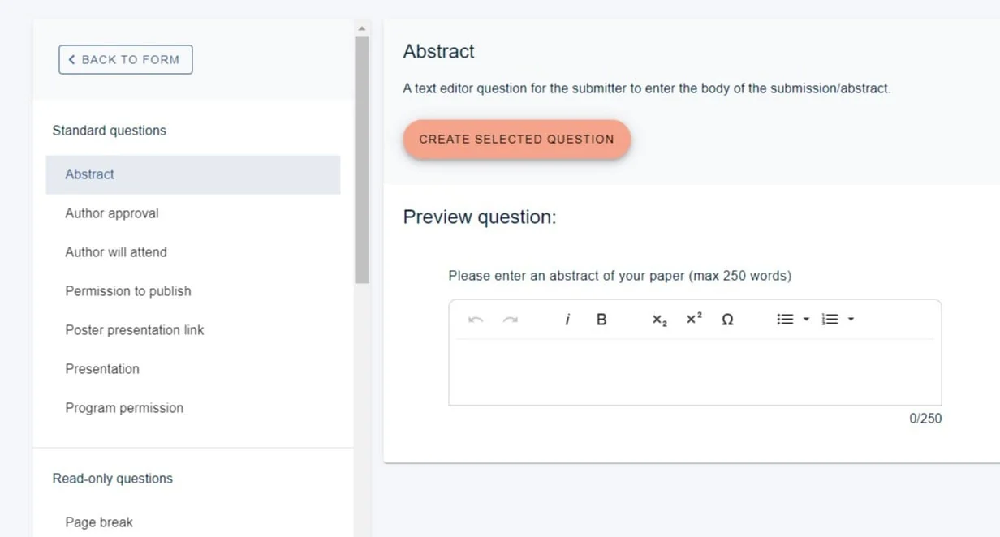
Standard Questions
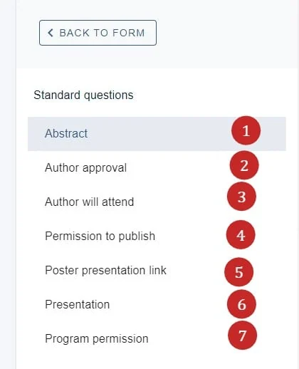
Abstract#
1) Amend the title (Question name- this field is mandatory)
2) Set a word limit, (Word limit (optional))
3) Set a character limit (Character limit (optional))
4) Check this box if this question's response is the title of the submission. Note: this is used to pick up the title of the submission when emailing a submitter.
5) Choose the formatting you wish to make available (Text editor type)
6) Add a description (this will be the text of the question)
At the bottom of the edit question panel, you can apply various tags - See Question tags
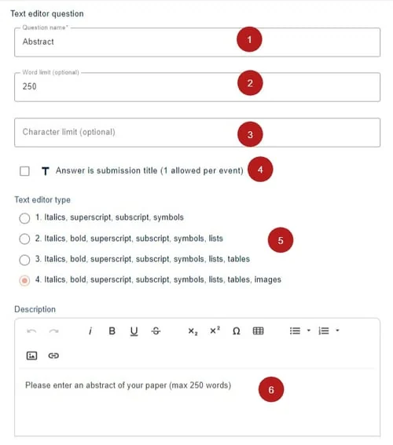
In the lower half, you can find Question tags and the display settings

When published, it is viewed as below.
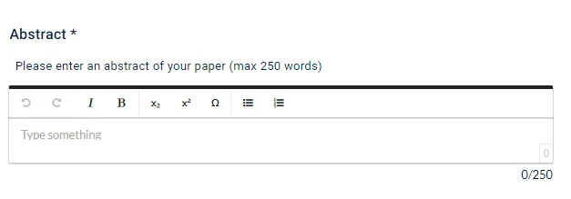
2) Author approval
3) Author will attend
4) Permission to publish
These are checkbox questions, and ideal when you require a consent answer. If it is tagged as a mandatory question, and the user leaves it unchecked, then the submission will be marked as incomplete. They are similar in terms of formatting, the difference being that they are prepopulated with the description text relevant to each question.
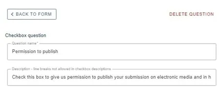
They will be displayed as below.
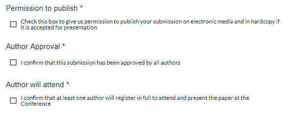
5) Poster presentation link
This question will allow the user to enter the link of a video.
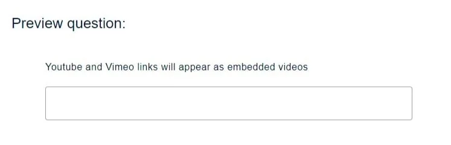
6) Presentation
These are questions where users choose options from a dropdown menu.
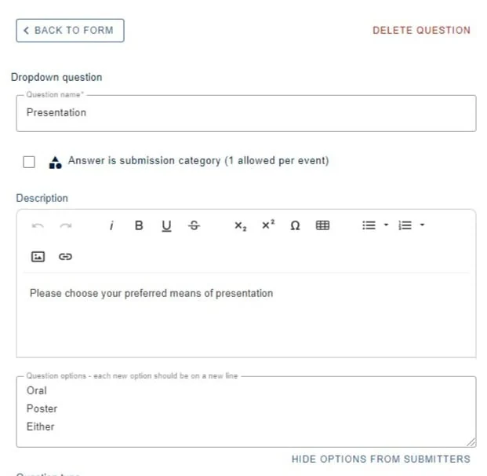
You can see how it will be displayed in the form below.
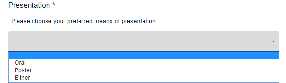
You can hide an option, if you require - eg if an option becomes unavailable after a certain date.
Click Hide options from submitters.
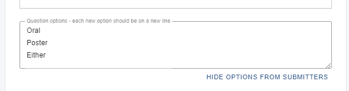
Choose the relevant option to hide the visibility.

7) Program permission
Similar to permission to publish, if a user checks this box, their submission will appear in the program.
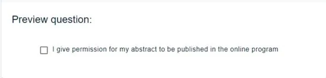
Read-only questions#
Page break - inserting a page break will create a new page of questions.
It is displayed as follows.
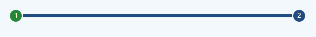
Text block question- used for giving information or instructions to the user and doesn't require a response.
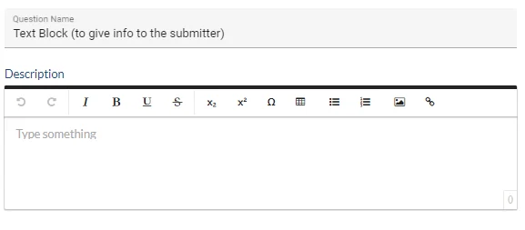
It is displayed as follows.
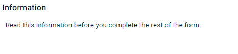
Text questions#
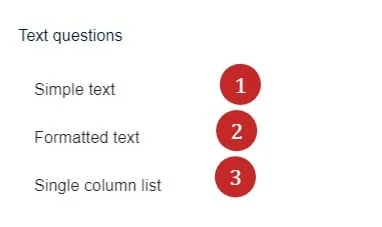
1) Simple text
A single line input. Used for names, addresses or other small pieces of text.
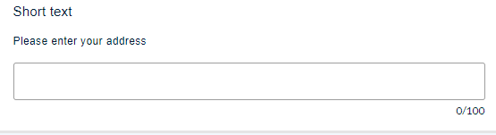
2) Formatted text
The same as Abstract question (above in standard questions)
3) Single column list
A vertical list of text inputs - eg. keywords
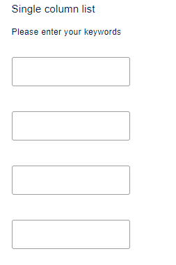
Checkbox questions#
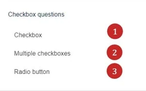
1) Checkbox
This can be used for questions with just one checkbox that require confirmation or agreement, similar to Author approval (above - standard questions). If you require more than one option, use Multiple choice radio or Multiple choice checkbox, below.
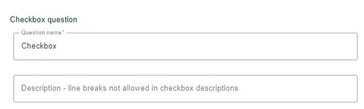
2) Multiple checkboxes
A list of responses to a single question. You can select more than one.
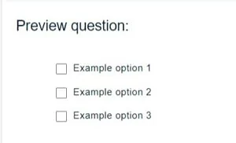
3) Radio button
Used for choosing just one option from a list.
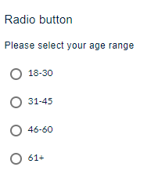
Dropdown questions#
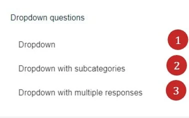
1) Dropdown This can be used for choosing one option from a list.
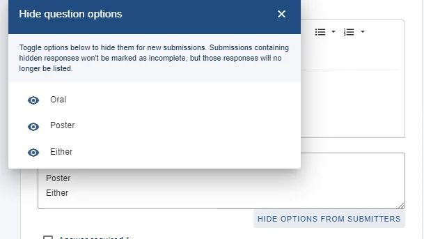
2) Dropdown with sub categories - This option can be used for choosing a category, and then a sub category.
It is displayed as follows.
Step 1
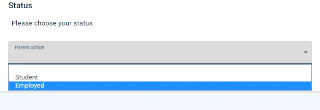
Step 2
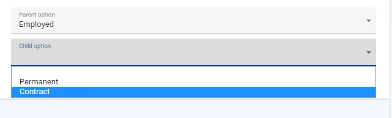
3) Dropdown with multiple responses
Used for choosing multiple options from a list.
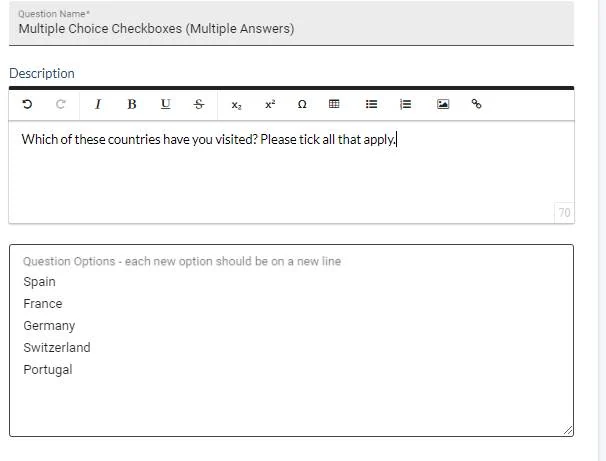
It is displayed as follows.
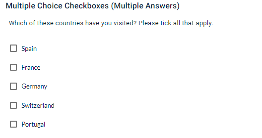
Multimedia questions#
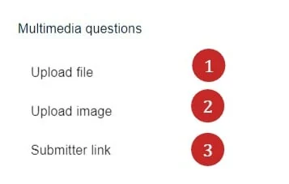
1) Upload file
Used for uploading documents and can be set to permitting just pdfs, if required.
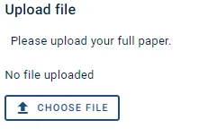
The upload file question will provide a link to a file, as opposed to the content within the file.
The size limit starts at 10MB and you can raise it to 500MB. If submitters are being turned away when uploading, this is the first thing to check — the default is comfortable for a PDF but not for video or a large poster. Set it on the question itself, and tell submitters the limit in the question text so they find out before they try.
2) Upload image
This question is used for when you want an image to be displayed. It differs from the file upload question in that the file upload question will provide a link, where as the image that is uploaded will be displayed in any abstract book download.
It is advisable to specify a maximum image width and height of 600 x 600 pixels, for consistent display in abstract books. You can also specify a maximum file size. This is useful for when creating abstract books, which could result in large amounts of data
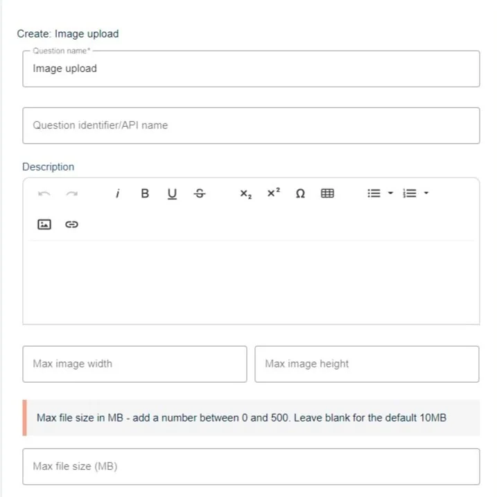
The question will be displayed as below
3) Submitter link
A website URL question response.
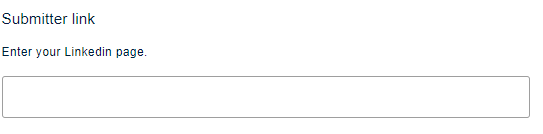
Other questions
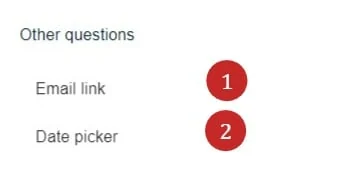
1) Email link
For entering an email address.
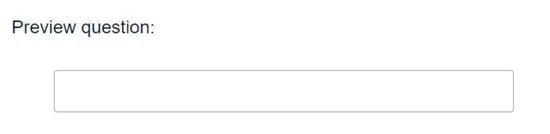
2) Date picker question - enables users to enter a date via a datepicker. It is displayed as below
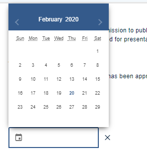
Didn't solve it? Ask our support team
No question is too small, and there's no charge for asking. Raise a ticket and someone who knows the software will pick it up.
Did this page solve it?
Thanks — this helps us fix it.